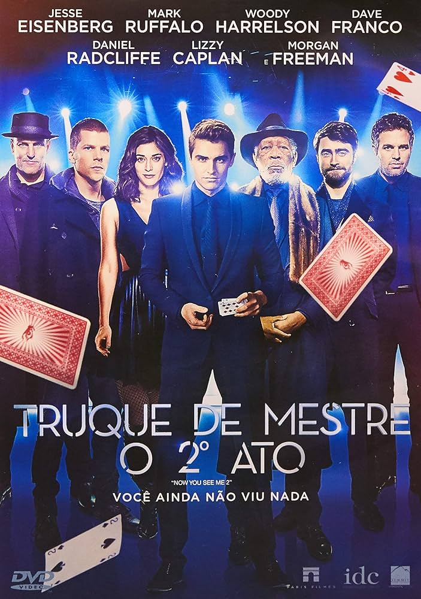
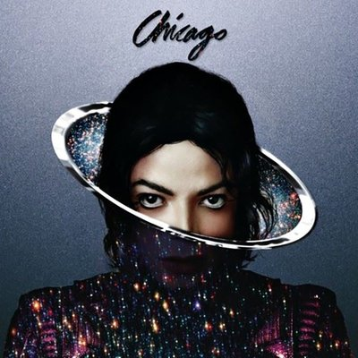
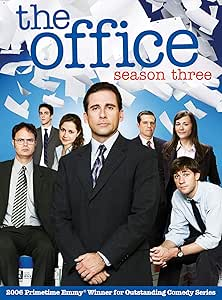

Favoritos da Vida
Esta é minha página de favoritos — um espaço onde reuni tudo o que eu mais gosto: filmes que me fazem viajar, músicas que acompanham meus dias, livros que marcaram minha história e séries que não me deixam sair do sofá. Aqui você vai encontrar um pedacinho do que eu amo consumir no meu tempo livre. Fique à vontade para explorar e, quem sabe, descobrir algo novo para sua lista também.
Filmes Favoritos
A Princesa e o Sapo

A Princesa e o Sapo conta a história de Tiana, uma jovem determinada que sonha em abrir seu próprio restaurante. Sua vida muda quando ela conhece um príncipe transformado em sapo, e juntos eles embarcam numa aventura em Nova Orleans para quebrar o feitiço. No caminho, aprendem sobre amor, amizade e a importância de correr atrás dos próprios sonhos.
Barbie: Escola de Princesas

Barbie: Escola de Princesas acompanha Blair, uma garota simples que é escolhida para estudar em uma escola especial onde meninas aprendem a se tornar princesas. Entre aulas de etiqueta, novas amizades e desafios, ela descobre sua força interior e aprende que ser princesa vai muito além de títulos — é sobre coragem, bondade e acreditar em si mesma.
Pecadores

Pecadores conta a história de dois irmãos gêmeos que retornam à sua cidade natal tentando deixar o passado ruim para trás. Mas quando eles chegam, descobrem que uma força maligna está à espreita e começa a assombrar a cidade e seus moradores, forçando todos a encarar perigos e mistérios que vão além do que eles imaginavam.
Truque de Mestre 2
Truque de Mestre 2 acompanha os “Quatro Cavaleiros”, um grupo de ilusionistas que realiza grandes golpes enquanto engana o FBI e o público. Depois de enganar seus perseguidores na primeira aventura, eles precisam enfrentar novos desafios e inimigos perigosos, usando truques de mágica, inteligência e muita ousadia para continuar um passo à frente de todos.
Músicas Favoritas
Faço Chover (It Will Rain)
Calcinha Preta

My Love (feat T.I)
Justin Timberlake

Chicago
Michael Jackson
Arde Outra Vez
Thalles Roberto

Livros Favoritos
É Assim que Acaba
Colleen Hoover

É Assim Que Acaba conta a história de Lily, uma jovem que vive um relacionamento intenso e apaixonado com Ryle. Enquanto enfrenta os altos e baixos do amor, ela precisa lidar com escolhas difíceis e perceber até onde vai a força dos sentimentos, aprendendo sobre amor, dor e coragem para seguir em frente.
Cartas de Um Diabo a Seu Aprendiz
C. S. Lewis

Cartas de um Diabo a Seu Aprendiz mostra o demoníaco Screwtape escrevendo conselhos a seu sobrinho Wormwood sobre como afastar um humano da bondade e levá‑lo ao erro. Através dessas cartas, o livro revela reflexões sobre tentação, escolhas e a natureza humana, usando humor e introspecção para explorar o bem e o mal.
O Pequeno Príncipe
Antoine de Saint-Exupéry

O Pequeno Príncipe acompanha a jornada de um garoto que viaja de planeta em planeta, encontrando personagens curiosos e aprendendo lições sobre amizade, amor e o valor das coisas simples da vida. Uma história delicada que ensina a enxergar o mundo com o coração.
Menina Bonita do Laço de Fita
Ana Maria Machado

Menina Bonita do Laço de Fita conta a história de uma coelhinha negra que descobre um dia uma amiga muito especial: uma menina com pele negra e um laço rosa no cabelo. Juntas, elas aprendem sobre amizade, beleza, autoestima e o orgulho de ser quem são, mostrando que a cor da pele é algo lindo e valioso.
Séries Favoritas
The Walking Dead

The Walking Dead acompanha Rick Grimes, um policial que acorda de um coma e descobre que o mundo foi devastado por um apocalipse zumbi. Ele precisa proteger sua família e um grupo de sobreviventes, enfrentando tanto os mortos-vivos quanto os perigosos humanos que surgem, enquanto luta para manter a esperança e a humanidade em um mundo destruído.
Bridgerton

Bridgerton acompanha a alta sociedade londrina do século XIX, onde amor, escândalos e segredos se entrelaçam entre famílias ricas e influentes. A série foca na busca por casamento, reputação e felicidade, mostrando intrigas, romances proibidos e dramas pessoais em um mundo de luxo e aparências.
The Office
The Office acompanha o dia a dia dos funcionários da empresa Dunder Mifflin, uma companhia de papel, mostrando o trabalho, os romances e as trapalhadas no escritório. Com muito humor, situações absurdas e personagens únicos, a série revela a vida comum de um jeito divertido e inesperado.
Anne With An E

Anne with an E conta a história de Anne Shirley, uma garota órfã e sonhadora que é enviada por engano para viver com os irmãos Cuthbert em Avonlea. Com sua imaginação, coragem e coração generoso, Anne enfrenta desafios, preconceitos e aventuras, mostrando como a determinação e a amizade podem transformar a vida de quem a cerca.